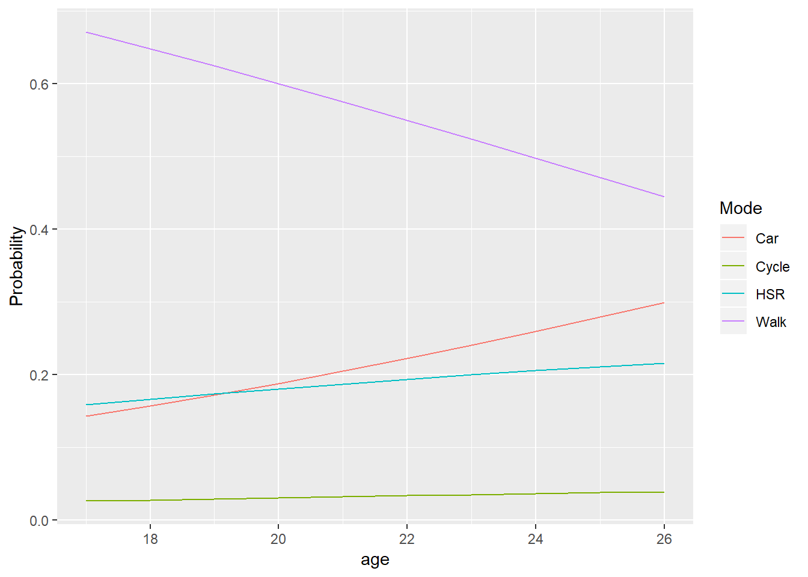

Chapter 5 Practical specification and estimation
“In theory, there is no difference between theory and practice. But in practice, there is.”
— Benjamin Brewster
“An ounce of practice is generally worth more than a ton of theory.
— E.F. Schumacher
5.1 Theory and practice
Chapters 3 and 4 presented a conceptual framework (a theory of behavior) and the necessary apparatus (based on probability theory) to implement the conceptual framework. This theoretical introduction was necessary to begin work from a solid foundation, and it provides an intuitive and elegant framework to study decision-making, and a powerful one too; Daniel McFadden was awarded the Sveriges Riksbank Prize in Economic Sciences (Nobel Prize) for his contributions to random utility modelling.
Although not described in detail in previous chapters, it is worthwhile to dwell for a moment on the history of the development of the logit model as a random utility model.
In his Nobel Lecture, McFadden (2001) recounts the path that led to the development of random utility models for discrete choices. Like most important discoveries, it is a meandering path. It began early in the 20th century with a theory for economic behavior (i.e., utility) that considered heterogeneous preferences that in practice were difficult to verify empirically because of data limitations. Indeed, studies before the 1960s mostly considered aggregated demand with representative agents (i.e., archetypical consumers) to accommodate this limitation in data availability. It was only when individual-level data became more widely collected and within reach of researchers that it became possible to pay attention to the behavior of individual agents.
While economists were busy with models of aggregated demand, research in psychometrics and mathematical psychology by L.L Thurstone and R.D. Luce was busy providing the technical basis for modelling what Thurstone termed Comparative Judgement (in the sense of making a decision or forming an opinion). In particular, Luce introduced the axiom of Independence of Irrelevant Alternatives (discussed in Chapter 4). According to McFadden (2001, p. 353), this axiom “simplified experimental collection of choice data by allowing multinomial choice probabilities to be inferred from binomial choice experiments.” J. Marschak was the first to introduce the work of Thurstone to econometrics in 1960, and also the author of the term Random Utility Maximizing (RUM) that eventually prevailed over the comparative judgement terminology of Thurstone. McFadden’s early contributions to this body of research was developing an econometric version of Luce’s model, with strict (i.e., systematic) utilities specified as functions of the attributes of the alternatives and linking unobserved preference heterogeneity to a fully consistent description of the distribution of demands. Since the 1970s, discrete choice analysis has been a burgeoning area of research with a plethora of applications in economics, marketing, and travel behavior, among many others.
This brief story neatly illustrates the complex interplay between theory and practice.
Early attempts to study demand were limited due to practical considerations (i.e., the absence of data at the individual level). Once appropriate data became available, new studies continued to push the theoretical envelope. Indeed, theoretical questions have continued to inspire newer way to collect data and novel methods, and these in turn have helped us to refine our understanding of behavior. See as an example the work on decision-making in social situations (Akerlof 1997; K. Axhausen 2005; A. Páez and Scott 2007) which inspired the use of new data sources (e.g., J. A. Carrasco et al. 2008 K. W. Axhausen (2008); Scott et al. 2012; Chen and Mahmassani 2016) as well as novel modelling approaches (e.g., Dugundji and Walker 2005; Dugundji and Gulyas 2013; Kamargianni, Ben-Akiva, and Polydoropoulou 2014) and empirical work (e.g., Berg, Arentze, and Timmermans 2009; Goetzke and Rave 2011; Matous 2017).
Now that the preceding chapters have armed us with the theory and basic concepts to implement random utility modelling, it is proper that we turn our attention to the practical aspects of modelling. The best way to ensure that the concepts take hold, in my view, is to get your hands on a dataset and struggle with the practicalities of cleaning and organizing data, specifying the utility functions (a task that is more art than science), and estimating models. These skills are mostly transferable to other modelling techniques, so we will begin by applying them to the most fundamental discrete choice model, the multinomial logit.
5.2 How to use this note
Remember that the source for the document you are reading is an R Notebook. Throughout the notes, you will find examples of code in segments of text called chunks. This is an example of a chunk:
print("Hats off to you, Prof. McFadden")## [1] "Hats off to you, Prof. McFadden"If you are working with the Notebook version of the document, you can run the code by clicking the ‘play’ icon on the top right corner of the chunk. If you are reading the web-book version of the document, you will often see that the code has already been executed. You can still try it by copying and pasting into your R or RStudio console.
5.3 Learning objectives
In this practice, you will learn about:
- Specification of utility functions.
- Maximum likelihood estimation.
- Estimation of multinomial logit models.
- McFadden’s \(\rho^2\)
- The likelihood ratio test.
5.4 Suggested readings
- Ben-Akiva, M. Lerman, (1985) Discrete Choice Analysis: Theory and Applications to Travel Demand, Chapters 4 and 5, MIT Press.
- Hensher, D.A., Rose, J.M., Greene, W.H (2005) Applied Choice Analysis: A Primer, Chapter 10, Cambridge University Press.
- Ortuzar JD, Willumsen LG (2011) Modelling Transport, Fourth Edition, Chapter 8, John Wiley and Sons.
- Train (2009) Discrete Choice Methods with Simulation, Second Edition, Chapter 3, Cambridge University Press.
5.5 Preliminaries
Load the packages used in this section:
library(tidyverse)
library(evd)
library(mlogit)
library(kableExtra)
library(plotly)##
## Attaching package: 'plotly'## The following object is masked from 'package:ggplot2':
##
## last_plot## The following object is masked from 'package:stats':
##
## filter## The following object is masked from 'package:graphics':
##
## layoutLoad the dataset used in this section:
load("Commute Mac.RData")5.6 The anatomy of utility functions
At the end Chapter 4 we took, for the first time, a closer look at the systematic utilities of discrete choice models. It is useful to think about the anatomy of a typical systematic utility function. Previously, we said that some variables vary across utility functions; these are typically the attributes that describe the various alternatives (e.g., level of service and cost). The variables that describe the decision-maker do not vary by alternative. This has implications, as seen before, for how the variables are entered into the functions. Since the model works on the basis of differences between utilities, the attributes must actually measure different levels of something or vanish.
We will describe the utilities in terms of the way different variables are introduced in the utility functions. As before, we will assume that the location parameters of the distribution are absorbed by \(J-1\) utility functions (where \(J\) is the number of alternatives).
Consider first variables that vary across alternatives. These variables can have a generic coefficient or they can have alternative-specific coefficients, as seen here:
$$
\[\begin{array}{l} V_{i1} =\\ V_{i2} =\\ V_{i3} =\\ \end{array}\]^ _{} ^{} $$
In many cases it sensible to have generic coefficients. For instance, if the variable is cost, we might assume that one dollar is valued equally irrespective of the it is spent on alternative. In other cases, alternative-specific coefficients might be informative. For instance, a consistent finding is that time spent traveling by public transportation is perceived as being more expensive than time traveling by car. Occasionally, as well, an attribute might be specific to an alternative: for instance, waiting time is often implicitly zero for travel by car and active modes of transportation (i.e., walking and cycling).
The differences of the utilities are as follows:
\[ \begin{array}{lll} V_{i2}-V_{i1}=&(\mu_2 - 0) & + &\beta_1(x_{i2} - x_{i1}) & + &(\delta_2w_{i2} - \delta_1w_{i1})\\ V_{i3}-V_{i1}=&(\mu_3 - 0) & + &\beta_1(x_{i2} - x_{i1}) & + &(\delta_3w_{i3} - \delta_1w_{i1})\\ V_{i3}-V_{i2}=&(\mu_3- \mu_2) & + &\beta_1(x_{i2} - x_{i1}) & + &(\delta_3w_{i3} - \delta_2w_{i2})\\ \end{array} \]
Variables that vary across individuals but not by alternative can be introduced with alternative-specific coefficients: $$
\[\begin{array}{l} V_{i1} =\\ V_{i2} =\\ V_{i3} =\\ \end{array}\]^ _{}
^{} _ $$
Following the example above, the differences of utilities are: \[ \begin{array}{lll} V_{i2}-V_{i1}=&(\mu_2 - 0) & + &\beta_1(x_{i2} - x_{i1}) & + &(\delta_2w_{i2} - \delta_1w_{i1}) & + &(\gamma_2 - 0)z_i\\ V_{i3}-V_{i1}=&(\mu_3 - 0) & + &\beta_1(x_{i2} - x_{i1}) & + &(\delta_3w_{i3} - \delta_1w_{i1}) & + &(\gamma_3 - 0)z_i\\ V_{i3}-V_{i2}=&(\mu_3- \mu_2) & + &\beta_1(x_{i2} - x_{i1}) & + &(\delta_3w_{i3} - \delta_2w_{i2}) & + &(\gamma_3 - \gamma_2)z_i\\ \end{array} \]
As an alternative, individual-level variables can be introduced as part of an expansion of some coefficients, for example: $$
\[\begin{array}{l} V_{i1} =\\ V_{i2} =\\ V_{i3} =\\ \end{array}\]^ _{} ^{} $$
The above expands to: $$
\[\begin{array}{l} V_{i1} =\\ V_{i2} =\\ V_{i3} =\\ \end{array}\]^ _{} ^{} $$
And so the differences in utilities are: \[ \begin{array}{lll} V_{i2}-V_{i1}=&(\mu_2 - 0) & + &\beta_{11}(x_{i2} - x_{i1}) & + &\beta_{11}(z_ix_{i2} - z_ix_{i1}) & + &(\delta_2w_{i2} - \delta_1w_{i1})\\ V_{i3}-V_{i1}=&(\mu_3 - 0) & + &\beta_{11}(x_{i2} - x_{i1}) & + &\beta_{11}(z_ix_{i3} - z_ix_{i1}) & + &(\delta_3w_{i3} - \delta_1w_{i1})\\ V_{i3}-V_{i2}=&(\mu_3- \mu_2) & + &\beta_{11}(x_{i2} - x_{i1}) & + &\beta_{11}(z_ix_{i3} - z_ix_{i2}) & + &(\delta_3w_{i3} - \delta_2w_{i2})\\ \end{array} \]
Understanding the anatomy of utility functions is essential to properly specify and estimate models.
5.7 Example: Specifying the utility functions
We will now proceed to work with a practical example, using the dataset that you encountered before in Chapter 2. This dataset contains information on various modes of transportation used by people commuting to McMaster University in Canada (Whalen, Páez, and Carrasco 2013). The dataset was loaded above as part of the preliminaries of this chapter. We can begin by exploring the data. First, we notice that this is a dataframe that has been prepared for use with the mlogit package:
class(mc_commute)## [1] "mlogit.data" "data.frame"Please note that this is the same dataset that you used in Chapter 2, but not the same file. For convenience, the dataset was pre-organized for use with mlogit. The contents of the dataframe can be quickly seen by means of the function head(). This function will display the first few top rows of the dataframe:
head(mc_commute, 8)## id choice HSR.access HSR.wait HSR.transfer parking vehind
## 1.Cycle 566872636 FALSE 3 15 0 No No
## 1.Walk 566872636 FALSE 3 15 0 No No
## 1.HSR 566872636 TRUE 3 15 0 No No
## 1.Car 566872636 FALSE 3 15 0 No No
## 2.Cycle 566873140 FALSE 4 15 0 No Yes
## 2.Walk 566873140 FALSE 4 15 0 No Yes
## 2.HSR 566873140 TRUE 4 15 0 No Yes
## 2.Car 566873140 FALSE 4 15 0 No Yes
## gender age shared family child
## 1.Cycle Male 21 Living in Shared Accommodations No No
## 1.Walk Male 21 Living in Shared Accommodations No No
## 1.HSR Male 21 Living in Shared Accommodations No No
## 1.Car Male 21 Living in Shared Accommodations No No
## 2.Cycle Male 23 No No No
## 2.Walk Male 23 No No No
## 2.HSR Male 23 No No No
## 2.Car Male 23 No No No
## street_density sidewalk_density LAT LONG alt available
## 1.Cycle 14.37621 22.63322 43.26302 -79.90074 Car No
## 1.Walk 14.37621 22.63322 43.26302 -79.90074 Cycle No
## 1.HSR 14.37621 22.63322 43.26302 -79.90074 HSR Yes
## 1.Car 14.37621 22.63322 43.26302 -79.90074 Walk Yes
## 2.Cycle 19.49754 39.64003 43.25885 -79.90476 Car Yes
## 2.Walk 19.49754 39.64003 43.25885 -79.90476 Cycle No
## 2.HSR 19.49754 39.64003 43.25885 -79.90476 HSR Yes
## 2.Car 19.49754 39.64003 43.25885 -79.90476 Walk Yes
## time chid
## 1.Cycle 1.000000e+05 1
## 1.Walk 6.211180e+00 1
## 1.HSR 5.000000e+00 1
## 1.Car 2.131439e+01 1
## 2.Cycle 2.000000e+00 2
## 2.Walk 3.726708e+00 2
## 2.HSR 1.000000e+01 2
## 2.Car 1.278863e+01 2As you can see, the dataframe has been organized in a particular way. Now, instead of each row being an individual, each row is a choice situation. Since there are four alternatives in this case, each row corresponds to the choice situation for an alternative for an individual. We notice that the row names now have the format #.Alt, where # is the number of the decision maker and Alt is the name of the alternative. In this way the first four rows of the table correspond to the first decision-maker who, faced with four alternatives, chose HSR (public transportation) - as recorded in the column choice. The next four rows correspond to the second decision-maker in the sample (who also chose HSR), and so on, four rows per decision-maker. More generally, there will be \(J\) ro. And so on.
The first step is to specify the utility functions for the desired model. The package mlogit uses for formuals mFormula objects that build upon the Formula package for multi-component formulas. As seen above, utility functions can potentially have multiple components, so the utilities to build formulas are quite useful.
Formulas for the mlogit package are defined using three parts: \[
\text{choice} \sim \text{alternative specific vars with generic coefficients }|\text{ individual specific vars }|\text{ alternative specific vars with specific coefficients}
\]
If we list all columns in the dataframe, we can see what variables are available for this analysis:
colnames(mc_commute)## [1] "id" "choice" "HSR.access"
## [4] "HSR.wait" "HSR.transfer" "parking"
## [7] "vehind" "gender" "age"
## [10] "shared" "family" "child"
## [13] "street_density" "sidewalk_density" "LAT"
## [16] "LONG" "alt" "available"
## [19] "time" "chid"Besides identifier variable id and chid, and the variable for choice, we see that several variables are specific to the individual decision-makers. These are parking (availability of a parking pass), vehind (whether the decision-maker has individual access to a private vehicle), gender, age, shared (living in shared accommodations away from the family home), family (living at the family home), and child (minors are present in the household). Furthermore, some variables relate to the physical environment of the place of residence (street_density and sidewalk_density), in addition to the coordinates of the place of residence (geocoded to the nearest major intersection or postal code centroid). One variable is alternative specific, namely time (travel time in minutes). And three variables are specific to public transportation, namely HSR.access (access time to public transportation in minutes), HSR.wait (waiting time in minutes), and HSR.transfer (number of transfers when traveling by public transportation).
We can begin by defining a very simple formula that considers only travel time. We will call this f1:
f1 <- mFormula(choice ~ time)The function model.matrix allows us to see how the formula is applied to the data (we use head() to display only the top rows of the model matrix):
head(model.matrix(f1, mc_commute), 8)## Walk:(intercept) HSR:(intercept) Car:(intercept) time
## 1.Cycle 0 0 0 1.000000e+05
## 1.Walk 1 0 0 6.211180e+00
## 1.HSR 0 1 0 5.000000e+00
## 1.Car 0 0 1 2.131439e+01
## 2.Cycle 0 0 0 2.000000e+00
## 2.Walk 1 0 0 3.726708e+00
## 2.HSR 0 1 0 1.000000e+01
## 2.Car 0 0 1 1.278863e+01We can see that the formula includes by default the alternative specific coefficients, in this case using as a reference cycling. The corresponding utility functions are as follows:
\[ \begin{array}{l} V_{i\text{Cycle}} =\\ V_{i\text{Walk}} =\\ V_{i\text{HSR}} =\\ V_{i\text{HSR}} =\\ \end{array} \overbrace{ \begin{array}{lll} 0 & +0 & +0\\ \mu_{\text{Walk}} & +0 & +0\\ 0 & +\mu_{\text{HSR}} & +0 \\ 0 & +0 & +\mu_{\text{Car}}\\ \end{array} }^\text{alternative specific constants} \underbrace{\begin{array}{lll} +\beta_1\text{time}_{i\text{Cycle}}\\ +\beta_1\text{time}_{i\text{Walk}}\\ +\beta_1\text{time}_{i\text{HSR}}\\ +\beta_1\text{time}_{i\text{Car}}\\ \end{array} }_{\text{alternative vars. with generic coefficients}} \]
Define now a formula with an individual-specific variable, say age, and call it f2:
f2 <- mFormula(choice ~ time | age)The model matrix is now:
head(model.matrix(f2, mc_commute), 8)## Walk:(intercept) HSR:(intercept) Car:(intercept) time
## 1.Cycle 0 0 0 1.000000e+05
## 1.Walk 1 0 0 6.211180e+00
## 1.HSR 0 1 0 5.000000e+00
## 1.Car 0 0 1 2.131439e+01
## 2.Cycle 0 0 0 2.000000e+00
## 2.Walk 1 0 0 3.726708e+00
## 2.HSR 0 1 0 1.000000e+01
## 2.Car 0 0 1 1.278863e+01
## Walk:age HSR:age Car:age
## 1.Cycle 0 0 0
## 1.Walk 21 0 0
## 1.HSR 0 21 0
## 1.Car 0 0 21
## 2.Cycle 0 0 0
## 2.Walk 23 0 0
## 2.HSR 0 23 0
## 2.Car 0 0 23And the utility functions are therefore:
\[ \begin{array}{l} V_{i\text{Cycle}} =\\ V_{i\text{Walk}} =\\ V_{i\text{HSR}} =\\ V_{i\text{HSR}} =\\ \end{array} \overbrace{ \begin{array}{lll} 0 & +0 & +0\\ \mu_{\text{Walk}} & +0 & +0\\ 0 & +\mu_{\text{HSR}} & +0 \\ 0 & +0 & +\mu_{\text{Car}}\\ \end{array} }^\text{alternative specific constants} \underbrace{\begin{array}{lll} +\beta_1\text{time}_{i\text{Cycle}}\\ +\beta_1\text{time}_{i\text{Walk}}\\ +\beta_1\text{time}_{i\text{HSR}}\\ +\beta_1\text{time}_{i\text{Car}}\\ \end{array} }_{\text{alternative vars. with generic coefficients}} \overbrace{ \begin{array}{lll} 0 & +0 & +0\\ \gamma_{1}\text{age}_{i} & +0 & +0\\ 0 & + \gamma_{2}\text{age}_{i} & +0 \\ 0 & +0 & +\gamma_{3}\text{age}_{i}\\ \end{array} }^\text{individual vars with specific coefficients} \]
Lets try a different formula, where time has alternative-specific instead of generic coefficients, and call it f3:
f3 <- mFormula(choice ~ 0 | age | time)Note that, since we do not define other alternative-specific variables with generic coefficients, we have to explicitly state that there are 0 such variables!
This formula leads to the following model matrix:
head(model.matrix(f3, mc_commute), 8)## Walk:(intercept) HSR:(intercept) Car:(intercept) Walk:age HSR:age
## 1.Cycle 0 0 0 0 0
## 1.Walk 1 0 0 21 0
## 1.HSR 0 1 0 0 21
## 1.Car 0 0 1 0 0
## 2.Cycle 0 0 0 0 0
## 2.Walk 1 0 0 23 0
## 2.HSR 0 1 0 0 23
## 2.Car 0 0 1 0 0
## Car:age Cycle:time Walk:time HSR:time Car:time
## 1.Cycle 0 1e+05 0.000000 0 0.00000
## 1.Walk 0 0e+00 6.211180 0 0.00000
## 1.HSR 0 0e+00 0.000000 5 0.00000
## 1.Car 21 0e+00 0.000000 0 21.31439
## 2.Cycle 0 2e+00 0.000000 0 0.00000
## 2.Walk 0 0e+00 3.726708 0 0.00000
## 2.HSR 0 0e+00 0.000000 10 0.00000
## 2.Car 23 0e+00 0.000000 0 12.78863The utility functions for this are:
$$ \[\begin{array}{l} V_{i\text{Cycle}} =\\ V_{i\text{Walk}} =\\ V_{i\text{HSR}} =\\ V_{i\text{HSR}} =\\ \end{array}\]^ _ ^{}
$$
Given the utility functions, the logit probabilities for each alternative are:
\[ \begin{array}{l} P(\text{Cycle}) = \frac{e^{V_{\text{Cycle}}}}{e^{V_{\text{Cycle}}}+e^{V_{\text{Walk}}}+e^{V_{\text{HSR}}}+e^{V_{\text{Car}}}}\\ P(\text{Walk}) = \frac{e^{V_{\text{Walk}}}}{e^{V_{\text{Cycle}}}+e^{V_{\text{Walk}}}+e^{V_{\text{HSR}}}+e^{V_{\text{Car}}}}\\ P(\text{HSR}) = \frac{e^{V_{\text{Cycle}}}}{e^{V_{\text{Cycle}}}+e^{V_{\text{Walk}}}+e^{V_{\text{HSR}}}+e^{V_{\text{Car}}}}\\ P(\text{Car}) =1 - P(\text{Cycle}) - P(\text{Walk}) - P(\text{HSR})\\ \end{array} \]
The utility functions depend on the data but also on the coefficients, which we do not know a priori. Rather, these must be retrieved from the sample, as discussed next.
5.8 Estimation
Before we can calculate the choice probabilities, we need to somehow obtain coefficients for the utility functions. The process to do so is called estimation, and it involves the use of a statistical sample.
To estimate the coefficients of a model we need to define a criterion. Estimates can take an infinite number of values, after all, so our criterion must be optimal in some sense - in this way, once that we estimate the coefficients we can be satisfied that the coefficients are the best that we can obtain given then inputs.
A common criterion used to estimate discrete choice models is the likelihood. So what is this likelihood? Previously we encountered probability distribution functions. These functions were defined by parameters (such as the location parameter and the dispersion parameter). Given the parameters, it is possible to calculate the probability of values for a variable \(x\). A likelihood function is a similar concept, except that whereas in the probability functions the parameters were given, in a likelihood function the data are given and the parameters need to be obtained from the function.
The relevant likelihood function for the multinomial logit model is as follows: \[ L = \prod_{i=n}^N\prod_{j=1}^J P_{ij}^{y_{ij}} \] where \(P_{ij}\) is the probability of decision-maker \(i\) selecting alternative \(j\) and \(y_{ij}\) is an indicator variable that takes the value of \(1\) if individual \(i\) chose alternative \(j\) and \(0\) otherwise. The effect of the indicator variable is to turn the probabilities on and off, since \(P^0 = 1\) and \(P^1 = P\). Notice that the likelihood function is bounded between 0 and 1, but in the case of the logit model is never exactly zero nor one, since the logit probabilities never thake those values.
Lets explore the behavior of this function by means of a simple example, with the binomial logit (i.e., only two alternative in the choice set), in which case the likelihood function becomes:
\[ L = \prod_{i=n}^N P_{iA}^{y_{iA}}P_{iB}^{y_{iB}} = \Bigg(\frac{e^{V_{iA}}}{e^{V_{iA}} + e^{V_{iB}}}\Bigg)^{y_{iA}} \Bigg(\frac{e^{V_{iB}}}{e^{V_{iA}} + e^{V_{iB}}}\Bigg)^{y_{iB}} \]
The utility functions \(V_{iA}\) and \(V_{iB}\) depend on the data, which we know (since we have a statistical sample), and the coefficients, which we do not know.
For the example, we have the following toy sample with six individuals:| Individual | Choice | yiA | yiB | xiA | xiB |
|---|---|---|---|---|---|
| 1 | A | 1 | 0 | 5 | 4 |
| 2 | A | 1 | 0 | 2 | 5 |
| 3 | B | 0 | 1 | 5 | 2 |
| 4 | A | 1 | 0 | 1 | 6 |
| 5 | B | 0 | 1 | 4 | 1 |
| 6 | B | 0 | 1 | 3 | 4 |
Based on this sample, we can specify the utility functions in this fashion:
\[ \begin{array}{l} V_{iA} = 0 &+& \beta x_{iA}\\ V_{iB} = \mu &+& \beta x_{iB}\\ \end{array} \]
These utility functions are very similar to the first set of utility function we defined in the preceding section for the case of mode choice.
Next, lets write the likelihood function for this toy sample, as a function of \(\mu\) and \(\beta\) and calculate the likelihood initially setting \(\mu\) and \(\beta\) to zero. We will call this “Experiment 1”:
mu <- 0
beta <- 0
P1A_1 <- (exp(beta * ts$xiA[1])/(exp(beta * ts$xiA[1]) + exp(mu + beta * ts$xiB[1])))
P1B_1 <- (exp(mu + beta * ts$xiB[1])/(exp(beta * ts$xiA[1]) + exp(mu + beta * ts$xiB[1])))
P2A_1 <- (exp(beta * ts$xiA[2])/(exp(beta * ts$xiA[2]) + exp(mu + beta * ts$xiB[2])))
P2B_1 <- (exp(mu + beta * ts$xiB[2])/(exp(beta * ts$xiA[2]) + exp(mu + beta * ts$xiB[2])))
P3A_1 <- (exp(beta * ts$xiA[3])/(exp(beta * ts$xiA[3]) + exp(mu + beta * ts$xiB[3])))
P3B_1 <- (exp(mu + beta * ts$xiB[3])/(exp(beta * ts$xiA[3]) + exp(mu + beta * ts$xiB[3])))
P4A_1 <- (exp(beta * ts$xiA[4])/(exp(beta * ts$xiA[4]) + exp(mu + beta * ts$xiB[4])))
P4B_1 <- (exp(mu + beta * ts$xiB[4])/(exp(beta * ts$xiA[4]) + exp(mu + beta * ts$xiB[4])))
P5A_1 <- (exp(beta * ts$xiA[5])/(exp(beta * ts$xiA[5]) + exp(mu + beta * ts$xiB[5])))
P5B_1 <- (exp(mu + beta * ts$xiB[5])/(exp(beta * ts$xiA[5]) + exp(mu + beta * ts$xiB[5])))
P6A_1 <- (exp(beta * ts$xiA[6])/(exp(beta * ts$xiA[6]) + exp(mu + beta * ts$xiB[6])))
P6B_1 <- (exp(mu + beta * ts$xiB[6])/(exp(beta * ts$xiA[6]) + exp(mu + beta * ts$xiB[6])))
L <- P1A_1^ts$yiA[1] * P1B_1^ts$yiB[1] *
P2A_1^ts$yiA[2] * P2B_1^ts$yiB[2] *
P3A_1^ts$yiA[3] * P3B_1^ts$yiB[3] *
P4A_1^ts$yiA[4] * P4B_1^ts$yiB[4] *
P5A_1^ts$yiA[5] * P5B_1^ts$yiB[5] *
P6A_1^ts$yiA[6] * P6B_1^ts$yiB[6]
# Create data frame to tabulate results:
df <- data.frame(Individual = c(1, 2, 3, 4, 5, 6),
Choice = c("A", "A", "B", "A", "B", "B"),
PA = c(P1A_1, P2A_1, P3A_1, P4A_1, P5A_1, P6A_1),
PB = c(P1B_1, P2B_1, P3B_1, P4B_1, P5B_1, P6B_1))
kable(df, "html", digits = 4, align = "c") %>%
kable_styling(bootstrap_options = c("striped", "hover")) %>%
footnote(general = paste("The value of the likelihood function is ", round(L, digits = 4)))| Individual | Choice | PA | PB |
|---|---|---|---|
| 1 | A | 0.5 | 0.5 |
| 2 | A | 0.5 | 0.5 |
| 3 | B | 0.5 | 0.5 |
| 4 | A | 0.5 | 0.5 |
| 5 | B | 0.5 | 0.5 |
| 6 | B | 0.5 | 0.5 |
| Note: | |||
| The value of the likelihood function is 0.0156 |
As you can see, that the logit probabilities when all coefficients are zero is \(0.5\). By setting the coefficients to zero we have defined what is called a null model. Since the variables are set to zero, this model has no useful information to estimate the probability, and therefore it assigns equal probabilities to all alternative. The likelihood is a relatively small value.
Now lets change the coefficients (call this “Experiment 2”):
mu <- 0.5 # -0.5
beta <- -1.5 # -0.5
P1A_2 <- (exp(beta * ts$xiA[1])/(exp(beta * ts$xiA[1]) + exp(mu + beta * ts$xiB[1])))
P1B_2 <- (exp(mu + beta * ts$xiB[1])/(exp(beta * ts$xiA[1]) + exp(mu + beta * ts$xiB[1])))
P2A_2 <- (exp(beta * ts$xiA[2])/(exp(beta * ts$xiA[2]) + exp(mu + beta * ts$xiB[2])))
P2B_2 <- (exp(mu + beta * ts$xiB[2])/(exp(beta * ts$xiA[2]) + exp(mu + beta * ts$xiB[2])))
P3A_2 <- (exp(beta * ts$xiA[3])/(exp(beta * ts$xiA[3]) + exp(mu + beta * ts$xiB[3])))
P3B_2 <- (exp(mu + beta * ts$xiB[3])/(exp(beta * ts$xiA[3]) + exp(mu + beta * ts$xiB[3])))
P4A_2 <- (exp(beta * ts$xiA[4])/(exp(beta * ts$xiA[4]) + exp(mu + beta * ts$xiB[4])))
P4B_2 <- (exp(mu + beta * ts$xiB[4])/(exp(beta * ts$xiA[4]) + exp(mu + beta * ts$xiB[4])))
P5A_2 <- (exp(beta * ts$xiA[5])/(exp(beta * ts$xiA[5]) + exp(mu + beta * ts$xiB[5])))
P5B_2 <- (exp(mu + beta * ts$xiB[5])/(exp(beta * ts$xiA[5]) + exp(mu + beta * ts$xiB[5])))
P6A_2 <- (exp(beta * ts$xiA[6])/(exp(beta * ts$xiA[6]) + exp(mu + beta * ts$xiB[6])))
P6B_2 <- (exp(mu + beta * ts$xiB[6])/(exp(beta * ts$xiA[6]) + exp(mu + beta * ts$xiB[6])))
L <- P1A_2^ts$yiA[1] * P1B_2^ts$yiB[1] *
P2A_2^ts$yiA[2] * P2B_2^ts$yiB[2] *
P3A_2^ts$yiA[3] * P3B_2^ts$yiB[3] *
P4A_2^ts$yiA[4] * P4B_2^ts$yiB[4] *
P5A_2^ts$yiA[5] * P5B_2^ts$yiB[5] *
P6A_2^ts$yiA[6] * P6B_2^ts$yiB[6]
# Create data frame to tabulate results:
df <- data.frame(Individual = c(1, 2, 3, 4, 5, 6),
Choice = c("A", "A", "B", "A", "B", "B"),
PA = c(P1A_2, P2A_2, P3A_2, P4A_2, P5A_2, P6A_2),
PB = c(P1B_2, P2B_2, P3B_2, P4B_2, P5B_2, P6B_2))
kable(df, "html", digits = 4, align = "c") %>%
kable_styling(bootstrap_options = c("striped", "hover")) %>%
footnote(general = paste("The value of the likelihood function is ", round(L, digits = 4)))| Individual | Choice | PA | PB |
|---|---|---|---|
| 1 | A | 0.1192 | 0.8808 |
| 2 | A | 0.9820 | 0.0180 |
| 3 | B | 0.0067 | 0.9933 |
| 4 | A | 0.9991 | 0.0009 |
| 5 | B | 0.0067 | 0.9933 |
| 6 | B | 0.7311 | 0.2689 |
| Note: | |||
| The value of the likelihood function is 0.031 |
Notice how changing the coefficients has two effects, as expected: the probabilities change and the value of the likelihood function changes too. Inspect the probabilities and the value of the likelihood function with the new coefficients. What do you notice?
If you are working with the R Notebook, at this point you can try changing the coefficients. Can you improve the value of the likelihood function, or maybe even make it worse?
The likelihood function can be plotted as shown below. If you hover over the plot, you can see how the value of the likelihood changes as a function of \(\mu\) and \(\beta\):Figure 5.1: Likelihood function for toy dataset
From Figure 4.1 we can see that the approximate values of the coefficients that maximize the likelihood function are \(\mu=0.10\) and \(\beta=-0.65\). If we use these coefficients to calculate the logit probabilities, we can compare to the probabilities of Experiments 1 and 2:
# Approximate values that maximize the likelihood function.
mu <- 0.10
beta <- -0.65
P1A_3 <- (exp(beta * ts$xiA[1])/(exp(beta * ts$xiA[1]) + exp(mu + beta * ts$xiB[1])))
P1B_3 <- (exp(mu + beta * ts$xiB[1])/(exp(beta * ts$xiA[1]) + exp(mu + beta * ts$xiB[1])))
P2A_3 <- (exp(beta * ts$xiA[2])/(exp(beta * ts$xiA[2]) + exp(mu + beta * ts$xiB[2])))
P2B_3 <- (exp(mu + beta * ts$xiB[2])/(exp(beta * ts$xiA[2]) + exp(mu + beta * ts$xiB[2])))
P3A_3 <- (exp(beta * ts$xiA[3])/(exp(beta * ts$xiA[3]) + exp(mu + beta * ts$xiB[3])))
P3B_3 <- (exp(mu + beta * ts$xiB[3])/(exp(beta * ts$xiA[3]) + exp(mu + beta * ts$xiB[3])))
P4A_3 <- (exp(beta * ts$xiA[4])/(exp(beta * ts$xiA[4]) + exp(mu + beta * ts$xiB[4])))
P4B_3 <- (exp(mu + beta * ts$xiB[4])/(exp(beta * ts$xiA[4]) + exp(mu + beta * ts$xiB[4])))
P5A_3 <- (exp(beta * ts$xiA[5])/(exp(beta * ts$xiA[5]) + exp(mu + beta * ts$xiB[5])))
P5B_3 <- (exp(mu + beta * ts$xiB[5])/(exp(beta * ts$xiA[5]) + exp(mu + beta * ts$xiB[5])))
P6A_3 <- (exp(beta * ts$xiA[6])/(exp(beta * ts$xiA[6]) + exp(mu + beta * ts$xiB[6])))
P6B_3 <- (exp(mu + beta * ts$xiB[6])/(exp(beta * ts$xiA[6]) + exp(mu + beta * ts$xiB[6])))
L <- P1A_3^ts$yiA[1] * P1B_3^ts$yiB[1] *
P2A_3^ts$yiA[2] * P2B_3^ts$yiB[2] *
P3A_3^ts$yiA[3] * P3B_3^ts$yiB[3] *
P4A_3^ts$yiA[4] * P4B_3^ts$yiB[4] *
P5A_3^ts$yiA[5] * P5B_3^ts$yiB[5] *
P6A_3^ts$yiA[6] * P6B_3^ts$yiB[6]
# Create data frame to tabulate results:
df <- data.frame(Individual = c(1, 2, 3, 4, 5, 6),
Choice = c("A", "A", "B", "A", "B", "B"),
PA_1 = c(P1A_1, P2A_1, P3A_1, P4A_1, P5A_1, P6A_1),
PB_1 = c(P1B_1, P2B_1, P3B_1, P4B_1, P5B_1, P6B_1),
PA_1 = c(P1A_2, P2A_2, P3A_2, P4A_2, P5A_2, P6A_2),
PB_1 = c(P1B_2, P2B_2, P3B_2, P4B_2, P5B_2, P6B_2),
PA_1 = c(P1A_3, P2A_3, P3A_3, P4A_3, P5A_3, P6A_3),
PB_1 = c(P1B_3, P2B_3, P3B_3, P4B_3, P5B_3, P6B_3))
kable(df, "html", digits = 4,
col.names = c("Individual", "Choice", "PA", "PB", "PA", "PB", "PA", "PB"),
align = "c") %>%
kable_styling(bootstrap_options = c("striped", "hover")) %>%
add_header_above(c(" " = 1, " " = 1, "Experiment 1" = 2, "Experiment 2" = 2, "Approx Max Likelihood" = 2))| Individual | Choice | PA | PB | PA | PB | PA | PB |
|---|---|---|---|---|---|---|---|
| 1 | A | 0.5 | 0.5 | 0.1192 | 0.8808 | 0.3208 | 0.6792 |
| 2 | A | 0.5 | 0.5 | 0.9820 | 0.0180 | 0.8641 | 0.1359 |
| 3 | B | 0.5 | 0.5 | 0.0067 | 0.9933 | 0.1141 | 0.8859 |
| 4 | A | 0.5 | 0.5 | 0.9991 | 0.0009 | 0.9589 | 0.0411 |
| 5 | B | 0.5 | 0.5 | 0.0067 | 0.9933 | 0.1141 | 0.8859 |
| 6 | B | 0.5 | 0.5 | 0.7311 | 0.2689 | 0.6341 | 0.3659 |
Maximizing the likelihood is a useful criterion to estimate the coefficients of the models, since this criterion provides the optimal probabilities of the right alternative being chosen - which does not necessarily mean that those probabilities will be high!
In this toy example we “solved” the problem of maximizing the likelihood by hand. This is rather difficult, unfeasible even, in most applied situations with large samples and/or more than one variable. Fortunately, there are a number of numerical algorithms that can be used to maximize the likelihood. We will not discuss this in detail, but interested readers can consult Train [Train (2009); Section 3.7] for details. The mlogit package imports the package maxLik (Henningsen and Toomet 2011), which implements canonical algorithms including Newton-Raphson, the Berndt–Hall–Hall–Hausman (or BHHH), and the Broyden–Fletcher–Goldfarb–Shanno (or BFGS) algorithm.
In practice, the algorithms above maximize not the likelihood function, but a transformation thereof, called the log-likelihood: \[
l = \sum_{i=n}^N\sum_{j=1}^J y_{ij}log(P_{ij})
\] Since the likelihood function is bound between zero and one, the log-likelihood is bound between minus infinity and zero. The value of the maximized log-likelihood function provides a useful diagnostic to compare models, since higher values are indicative of a better model. Several statistical tests (such as the likelihood ratio) can be used to test the hypothesis that a model is a significant improvement over other, and are thus useful for model selection purposes. Before these diagnostics, lets see how multinomial logit models are estimated using mlogit.
5.9 Example: A logit model of mode choice
Coming back to the transportation mode choice dataset, we already defined some formulas (i.e., utility functions) that we can use to estimate a model.
The function to estimate a model is mlogit(). This function requires at least two arguments: an mFormula object and a dataset. We can verify that the formulas we created above are of this class:
class(f1)## [1] "mFormula" "Formula" "formula"class(f2)## [1] "mFormula" "Formula" "formula"class(f3)## [1] "mFormula" "Formula" "formula"The value (output) of the function can be named and saved to an object for further analysis or post-estimation processing. Begin by estimating the
model1 <- mlogit(f1, mc_commute)
summary(model1)##
## Call:
## mlogit(formula = choice ~ time, data = mc_commute, method = "nr",
## print.level = 0)
##
## Frequencies of alternatives:
## Cycle Walk HSR Car
## 0.034884 0.516715 0.244186 0.204215
##
## nr method
## 6 iterations, 0h:0m:0s
## g'(-H)^-1g = 4.14E-05
## successive function values within tolerance limits
##
## Coefficients :
## Estimate Std. Error z-value Pr(>|z|)
## Walk:(intercept) 2.8006e+00 1.5419e-01 18.1632 < 2.2e-16 ***
## HSR:(intercept) 1.7270e+00 1.5493e-01 11.1471 < 2.2e-16 ***
## Car:(intercept) 1.8978e+00 1.6151e-01 11.7506 < 2.2e-16 ***
## time -9.2134e-06 1.0585e-06 -8.7037 < 2.2e-16 ***
## ---
## Signif. codes: 0 '***' 0.001 '**' 0.01 '*' 0.05 '.' 0.1 ' ' 1
##
## Log-Likelihood: -1509.6
## McFadden R^2: 0.026441
## Likelihood ratio test : chisq = 82 (p.value = < 2.22e-16)The output of the function includes the estimated frequencies of alternatives in addition to information about the optimization procedure. For instance, the message “successive function values within tolerance limits” indicates that the algorithm converged normally.
The output also reports the estimated values of the coefficients, along with standard errors, z-values, and p-values. Recall that the null hypothesis in this case is that the coefficient is zero. Small p-values can be used to reject the null hypothesis. In the present case, the null hypothesis can be comfortably rejected.
This simple model includes three alternative-specific constants and one alternative-specific variable with a generic coefficient. The signs of the coefficients are informative. Since the reference mode is “Cycle”, the positive values of the constants indicate that, other things being equal, cycling is the least preferred mode, followed by HSR and then Car. The most preferred mode (again, other things being equal), is Walk. This is verified from the estimated frequencies of the modes.
The negative coefficient for time indicates that time is a “cost”, in other words, the utility tends to decline with increasing travel times. This means that modes that tend to be slower will have lower utilities.
Finally, the maximized value of the log-likelihood function is reported, along with two diagnostics, McFadden R^2 (in reality \(\rho^2\)) and a likelihood ratio tests. We will come back to these diagnostics below, but first, lets estimate a model using the second formula.
model2 <- mlogit(f2, mc_commute)
summary(model2)##
## Call:
## mlogit(formula = choice ~ time | age, data = mc_commute, method = "nr",
## print.level = 0)
##
## Frequencies of alternatives:
## Cycle Walk HSR Car
## 0.034884 0.516715 0.244186 0.204215
##
## nr method
## 6 iterations, 0h:0m:0s
## g'(-H)^-1g = 4.3E-05
## successive function values within tolerance limits
##
## Coefficients :
## Estimate Std. Error z-value Pr(>|z|)
## Walk:(intercept) 4.7672e+00 6.9102e-01 6.8988 5.245e-12 ***
## HSR:(intercept) 1.9714e+00 6.5141e-01 3.0263 0.002476 **
## Car:(intercept) 1.0572e+00 6.4186e-01 1.6471 0.099543 .
## time -9.0888e-06 1.0778e-06 -8.4326 < 2.2e-16 ***
## Walk:age -9.0142e-02 2.9816e-02 -3.0233 0.002501 **
## HSR:age -1.0414e-02 2.7417e-02 -0.3798 0.704064
## Car:age 3.7357e-02 2.6923e-02 1.3876 0.165271
## ---
## Signif. codes: 0 '***' 0.001 '**' 0.01 '*' 0.05 '.' 0.1 ' ' 1
##
## Log-Likelihood: -1480.4
## McFadden R^2: 0.045309
## Likelihood ratio test : chisq = 140.51 (p.value = < 2.22e-16)Now there is an individual-specific variable in the model (i.e., age). Only one of those coefficients is significant at conventional levels (i.e., \(p<0.05\)), and it is negative. Since the reference is “Cycle”, a negative value indicates that the utility of walking declines with age with respect to the utility of cycling. Two other coefficients for age (in the utility of HSR and CAR) are not significantly different from zero, meaning that age does not change the utility of travel by HSR and Car with respect to Cycle.
Note that it is possible to select the reference level for the utilities when estimating the model. For example, lets reestimate the model above, but now using the utility of Walk as the reference:
model2 <- mlogit(f2, mc_commute, reflevel = "Walk")
summary(model2)##
## Call:
## mlogit(formula = choice ~ time | age, data = mc_commute, reflevel = "Walk",
## method = "nr", print.level = 0)
##
## Frequencies of alternatives:
## Walk Cycle HSR Car
## 0.516715 0.034884 0.244186 0.204215
##
## nr method
## 6 iterations, 0h:0m:0s
## g'(-H)^-1g = 4.3E-05
## successive function values within tolerance limits
##
## Coefficients :
## Estimate Std. Error z-value Pr(>|z|)
## Cycle:(intercept) -4.7672e+00 6.9102e-01 -6.8988 5.245e-12 ***
## HSR:(intercept) -2.7959e+00 4.1947e-01 -6.6652 2.644e-11 ***
## Car:(intercept) -3.7100e+00 4.1768e-01 -8.8825 < 2.2e-16 ***
## time -9.0888e-06 1.0778e-06 -8.4326 < 2.2e-16 ***
## Cycle:age 9.0142e-02 2.9816e-02 3.0233 0.002501 **
## HSR:age 7.9728e-02 1.9135e-02 4.1666 3.091e-05 ***
## Car:age 1.2750e-01 1.8769e-02 6.7931 1.098e-11 ***
## ---
## Signif. codes: 0 '***' 0.001 '**' 0.01 '*' 0.05 '.' 0.1 ' ' 1
##
## Log-Likelihood: -1480.4
## McFadden R^2: 0.045309
## Likelihood ratio test : chisq = 140.51 (p.value = < 2.22e-16)Now all age-related coefficients are significant! Whereas some of them are not significantly different with respect to each other as seen above (e.g. Cycle and HSR), the are all significantly different from the reference. Since the coefficients are positive, this indicates that the utilities of cycling, using HSR, and traveling by car all increase with age with respect to walking.
The value of the maximized log-likelihood and other diagnostics are identical, irrespective of which mode is selected as a utility. In essence, the models are the same, but they provide a different perspective on how some coefficients relate to each other across alternatives.
We can visually explore how the probability of choosing different modes varies with age. First summarize the age variable:
summary(mc_commute$age)## Min. 1st Qu. Median Mean 3rd Qu. Max.
## 17.00 20.00 21.00 22.08 23.00 60.00Copy the dataframe used to estimate the model, but only enough columns to explore an age range of 10 years, say from 17 to 26. Since there are four alternatives, this means that we need fourty rows:
mc_commute_predict <- mc_commute[1:40,]Replace the age variable by values for ages 17 to 26:
mc_commute_predict$age <- rep(c(17:26), each = 4)Replace time by median travel time:
mc_commute_predict$time <- median(mc_commute$time)Next, predict the probabilities using the predict() function:
probs <- predict(model2, newdata = mc_commute_predict)The value (output) of predict is a 10-by-4 matrix that contains the probability for ten age values (i.e., 16, 17, 18, …, 26), and four modes (Walk, Cycle, HSR, Car). To facilitate plotting, we add the age values and then reshape that 10-by-4 matrix as follows:
probs <- data.frame(age = c(17:26), probs) %>% gather(key = "Mode", value = "Probability", -age)By “gathering” the probabilities, now the data frame has one column with the mode and one column with the probability. We can then plot:
ggplot(data = probs, aes(x = age, y = Probability, color = Mode)) +
geom_line()
We can see that the probability of walking (for a trip that takes the median duration in the sample) declines with age. The probability of using the three other modes increases with age, but more rapidly for car than for transit or cycling.
5.10 Comparing models: McFadden’s \(\rho^2\)
The log-likelihood reported in the summary of the model is useful as a measure of goodness of fit. Recall that the likelihood of this model is bounded between \(0\) and \(1\), and therefore the log-likelihood is bounded at the upper end by \(0\) (it is minus infinity at the lower end). We also know that higher values of the likelihood represent better fits.
One simple diagnostic to compare the fit of models is McFadden’s \(\rho^2\). This summary diagnostic is defined as follows: \[ \rho^2 = 1 - \frac{l^*}{l_0} \] where \(l^*\) is the value of the maximized log-likelihood and \(l_0\) is the value of the log-likelihood of a null model (perhaps without constants, or a constants only model). If the model is uninformative, its log-likelihood will tend to the likelihood of the null model. In this case \(l^*/l_0\) tends to one and therefore \(\rho^2\) tends to zero. If the maximized log-likelihood of the model tends to 0 (the upper limit for the log-likelihood function), \(\rho^2\) tends to one.
Although \(\rho^2\) is bounded between zero and one, similar to the coefficient of determination \(R^2\) in regression analysis, its interpretation is not the same as for \(R^2\). Whereas \(R^2\) is interpreted as the proportion of variance explained by the model, \(\rho^2\) lacks such an interpretation. Also, the values of \(\rho^2\) tend to be lower, and values of \(0.4\) are considered very good fits. The main utility of McFadden’s \(\rho^2\) is as a quick way of comparing the relative fit of different models, rather than assessing the fit against an absolute value of goodness of fit.
5.11 Comparing models: the likelihood ratio test
Another way to compare models is by means of the likelihood ratio test. This test compares the log-likelihood of two models to assess whether they are significantly different. The test follows the \(\chi^2\) distribution with degrees of freedom equal to the difference in the number of coefficients between the two models. The test requires a base model and a full model, and the base model must nest within the full model. Nesting in this sense means that full model must be reducible to the base model by setting some coefficients to zero.
For example, consider the utility functions of model2: \[
\begin{array}{l}
V_{i\text{Cycle}} = 0 &+& \beta_1\text{time}_{i\text{Cycle}} &+& 0\\
V_{i\text{Walk}} = \mu_{\text{Walk}} &+& \beta_1\text{time}_{i\text{Walk}} &+& \gamma_{1}\text{age}_{i}\\
V_{i\text{HSR}} = \mu_{\text{HSR}} &+& \beta_1\text{time}_{i\text{HSR}} &+& \gamma_{2}\text{age}_{i}\\
V_{i\text{HSR}} = \mu_{\text{Car}} &+& \beta_1\text{time}_{i\text{Car}} &+& \gamma_{3}\text{age}_{i}\\
\end{array}
\]
We can reduce this model to model1 by setting \(\gamma_{1}=\gamma_{2}=\gamma_{3}=0\): \[
\begin{array}{l}
V_{i\text{Cycle}} = 0 &+& \beta_1\text{time}_{i\text{Cycle}}\\
V_{i\text{Walk}} = \mu_{\text{Walk}} &+& \beta_1\text{time}_{i\text{Walk}}\\
V_{i\text{HSR}} = \mu_{\text{HSR}} &+& \beta_1\text{time}_{i\text{HSR}}\\
V_{i\text{HSR}} = \mu_{\text{Car}} &+& \beta_1\text{time}_{i\text{Car}}\\
\end{array}
\]
In this way, model1 “nests” in model2.
In the summary of the models, the likelihood ratio test is reported. See:
summary(model1)##
## Call:
## mlogit(formula = choice ~ time, data = mc_commute, method = "nr",
## print.level = 0)
##
## Frequencies of alternatives:
## Cycle Walk HSR Car
## 0.034884 0.516715 0.244186 0.204215
##
## nr method
## 6 iterations, 0h:0m:0s
## g'(-H)^-1g = 4.14E-05
## successive function values within tolerance limits
##
## Coefficients :
## Estimate Std. Error z-value Pr(>|z|)
## Walk:(intercept) 2.8006e+00 1.5419e-01 18.1632 < 2.2e-16 ***
## HSR:(intercept) 1.7270e+00 1.5493e-01 11.1471 < 2.2e-16 ***
## Car:(intercept) 1.8978e+00 1.6151e-01 11.7506 < 2.2e-16 ***
## time -9.2134e-06 1.0585e-06 -8.7037 < 2.2e-16 ***
## ---
## Signif. codes: 0 '***' 0.001 '**' 0.01 '*' 0.05 '.' 0.1 ' ' 1
##
## Log-Likelihood: -1509.6
## McFadden R^2: 0.026441
## Likelihood ratio test : chisq = 82 (p.value = < 2.22e-16)In this case, the test is against the null model, that is, a model with no variables at all. This is the least informative of all models.
When two non-null models need to be compared, the lrtest function implements the likelihood ratio test for two inputs, which are two mlogit models, as follows:
lrtest(model1, model2)## Likelihood ratio test
##
## Model 1: choice ~ time
## Model 2: choice ~ time | age
## #Df LogLik Df Chisq Pr(>Chisq)
## 1 4 -1509.6
## 2 7 -1480.4 3 58.512 1.222e-12 ***
## ---
## Signif. codes: 0 '***' 0.001 '**' 0.01 '*' 0.05 '.' 0.1 ' ' 1Notice that the number of degrees of freedom (Df) is \(3\): this is because there are three individual-specific parameters in model2 that are not present in model1. The null hypothesis of the test is that the log-likelihood of the two models is not different, in other words, that the alternate model is not an improvement over the base model.
In the present case, the very small \(p\)-value leads us to reject the null hypothesis, and the conclusion is that model2, which includes age, is a significant improvement over model1, which does not.
5.12 Exercise
In the example in this chapter we estimated the probabilities of choosing different modes by age setting travel time to the in-sample median. Calculate the probability of choosing the modes as a function of time for ages 17, 20, 23, and 26.
Estimate a model using formula
f3(call itmodel3). Discuss the output of this model.Use the likelihood ratio test to compare
model3tomodel1.Can you use the likelihood ratio test to comare
model3tomodel2? Discuss.
References
McFadden, D. 2001. “Economic Choices.” Journal Article. American Economic Review 91 (3): 351–78. doi:10.1257/aer.91.3.351.